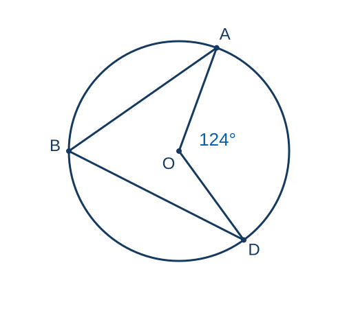
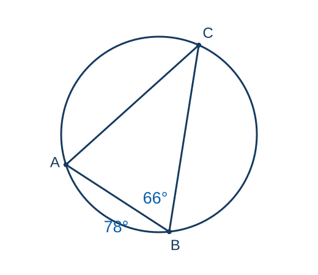
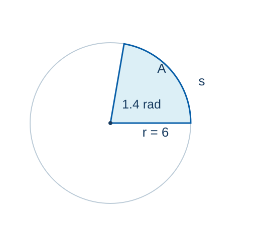
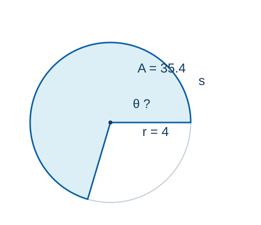
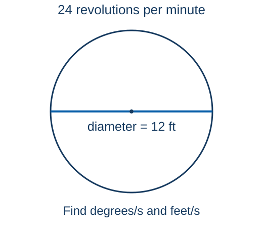

MATH 130 · Unit 2
Circle, Radian, and Speed Review
Monday, October 19, 2026 · Unit 2D review of circle diagrams, conversions, arcs, sectors, and rotational speed
55 minutes · Offline capable
Today’s practice sequence
- 1
Read the circle diagram
- 2
Convert the angle and keep precision
- 3
Find the unknown in an arc or sector
- 4
Convert rpm and use the radius
Activate · 0 minSource: Authored
Where is the vertex?
Predict firstLocate O and B. Which angle is central and which is inscribed?
Commit to a response before discussion.

O is the center. Both angles intercept arc AD.Activate · 0.5 minSource: Authored
Angles and intercepted arcs
Concept- A central angle equals the measure of its intercepted arc.
- An inscribed angle is half its intercepted arc.
- All arcs around a circle total 360°.
O is the center. Both angles intercept arc AD.
Explain · 1 minSource: Authored
Central and inscribed angles
Find angle ABD and minor arc AD.
- The central angle AOD is 124°, so minor arc AD is 124°.
- Angle ABD intercepts that same arc: $124^\circ/2=62^\circ$.
- The vertex location determines the rule.
O is the center. Both angles intercept arc AD.
Model · 2 minSource: Authored
Triangle and arc practice
Student practice- Find angle BAC and minor arc BC.
- Show the intermediate arc or triangle-angle calculation.
Feedback and solution- Arc AC is $2(66^\circ)=132^\circ$.
- Arc BC is $360^\circ-78^\circ-132^\circ=150^\circ$.
- Angle BAC is $150^\circ/2=75^\circ$.

Given: arc AB = 78° and angle ABC = 66°.Practice · 3 minSource: Authored
Two routes to the same angle
Arc route: double the inscribed angle, subtract known arcs from 360°, then halve the remaining arc.
Triangle route: angle ACB is 39°, so angle BAC is 180° − 66° − 39° = 75°.
Feedback · 1 minSource: Authored
Pacing checkpointCircle-angle checkpoint
- Name the vertex and intercepted arc before calculating.
- Central angle = arc. Inscribed angle = half the arc.
Exit responseAnswer in complete mathematical sentences and identify one remaining question.
Synthesize · 0.5 minSource: Authored
Which conversion is needed?
Predict first- What changes when an angle is written as DMS, decimal degrees, or radians?
- Which form is required in $s=r\theta$?
Commit to a response before discussion.
Activate · 0.5 minSource: Authored
Decimal degrees to DMS
Convert 38.726145° to DMS, to the nearest second.
- Degrees: 38°. Multiply the decimal part by 60: $0.726145(60)=43.5687$.
- Minutes: 43′. Multiply the remaining decimal by 60: $0.5687(60)=34.122$.
- Round once, at the end: 38°43′34″.
Model · 2 minSource: Authored
DMS to decimal degrees
Convert 101°18′24.7″ to decimal degrees, to four decimal places.
- $101+18/60+24.7/3600=101.3068611\ldots$
- Rounded to four decimal places: 101.3069°.
Model · 1.5 minSource: Authored
Decimal degrees to radians
Convert 137.6° to radians, to three decimal places.
- $137.6(\pi/180)=2.401572\ldots$
- Keep π in the calculator expression. Round the final answer: 2.402 rad.
Model · 1 minSource: Authored
Conversion practice
Student practice- Convert 58.417862° to DMS, to the nearest second.
- Convert 112°36′18.5″ to decimal degrees, to four decimal places.
Feedback and solution- $0.417862(60)=25.07172$; $0.07172(60)=4.3032$: 58°25′04″.
- $112+36/60+18.5/3600=112.6051388\ldots$: 112.6051°.
Practice · 3 minSource: Authored
Precision and notation
Error analysis- Minutes and seconds use base 60. A decimal degree is not DMS notation.
- Match the question’s requested decimal places. Round the final result once.
Self-checkWhat evidence confirms the setup, sign, unit, or magnitude?
Feedback · 0.5 minSource: Authored
Pacing checkpointConversion checkpoint
- DMS to decimal uses division by 60 and 3600.
- Decimal to DMS uses the fractional part twice, multiplying by 60.
Exit responseAnswer in complete mathematical sentences and identify one remaining question.
Synthesize · 0.5 minSource: Authored
Length or area?
Predict first- The same radius and angle determine both a curved distance and a shaded area.
- Which quantity uses square units?
Commit to a response before discussion.

The curved boundary is a length; the shaded region is an area.Activate · 1 minSource: Authored
One sector, two measurements
Radius = 6 units and angle = 1.4 rad. Find arc length and sector area.
- $s=6(1.4)=8.4$ units.
- $A=\tfrac12(6^2)(1.4)=25.2$ square units.
- The radius is squared only in the area formula.
The curved boundary is a length; the shaded region is an area.
Model · 2 minSource: Authored
Solve backwards for radius
Student practice- Together: an arc is 24 units long with central angle 80°. Find the radius.
- Then independently: an arc is 21 units long with central angle 105°. Find the radius.
Feedback and solution- $r=24/(80\pi/180)=54/\pi\approx17.19$ units.
- $r=21/(105\pi/180)=36/\pi\approx11.46$ units.
Practice · 3 minSource: Authored
Solve backwards for angle
A sector has area 35.4 square units and radius 4 units. Find θ in radians and degrees.
- $\theta=2A/r^2=2(35.4)/4^2=4.425$ rad.
- $\theta_{deg}=4.425(180/\pi)\approx253.53^\circ$.
- The angle is between π and 2π radians, so a sector larger than a semicircle is reasonable.

The highlighted sector can have an angle above 180°.Model · 2 minSource: Authored
Check an inverse-sector setup
Student practice- Without looking at the model, write an equation for a sector with area 35.4 and radius 4.
- Solve for the angle in radians and degrees.
- Explain why an angle above 180° is allowed.
Feedback and solution- $35.4=\tfrac12(4^2)\theta$, so θ = 4.425 rad ≈ 253.53°.
- A sector can cover more than half a circle while remaining below a full 360° turn.
The highlighted sector can have an angle above 180°.
Practice · 3 minSource: Authored
Check the setup before arithmetic
- For radius, divide arc length by the angle in radians.
- For angle, double the sector area and divide by the squared radius.
A 150° sector with radius 20 has area $500\pi/3\approx523.60$ square units.
Feedback · 3 minSource: Authored
Pacing checkpointArc and sector checkpoint
- Circle the requested unknown first.
- Convert degrees to radians before substitution.
- Check whether the answer is a length, an area, or an angle.
Exit responseAnswer in complete mathematical sentences and identify one remaining question.
Synthesize · 1 minSource: Authored
Same rotation, different distance
Predict first- Do the center and the rim have the same angular speed?
- Does a point farther from the center travel farther per turn?
Commit to a response before discussion.
Activate · 0.5 minSource: Authored
A rotating wheel
Diameter = 12 ft, rotation = 24 rpm. Find angular speed in degrees/s and rim speed in ft/s.
- $r=12/2=6$ ft.
- $24(360)/60=144^\circ/\mathrm{s}$.
- $\omega=24(2\pi)/60=4\pi/5$ rad/s.
- $v=6(4\pi/5)=24\pi/5\approx15.08$ ft/s.

The given length crosses the entire wheel.Model · 3 minSource: Authored
Rotation practice
Student practice- A wheel has diameter 8 ft and turns at 30 rpm.
- Find angular speed in degrees/s and linear speed at the rim in ft/s.
- Write the diameter-to-radius step and both unit conversions.
Feedback and solution- $r=4$ ft. Angular speed = $30(360)/60=180^\circ/\mathrm{s}$.
- $\omega=30(2\pi)/60=\pi$ rad/s.
- $v=4\pi\approx12.57$ ft/s.
Practice · 4 minSource: Authored
Two common speed errors
Error analysis- Using the diameter in $v=r\omega$ doubles the speed.
- Degrees/s cannot go directly into $v=r\omega$; use radians/s.
- Convert minutes to seconds once, and label the final units.
Self-checkWhat evidence confirms the setup, sign, unit, or magnitude?
Feedback · 2 minSource: Authored
Pacing checkpointSpeed checkpoint
- Radius first. Convert rpm. Then multiply radius by radians per second.
- A sensible answer includes a distance unit and a time unit.
Exit responseAnswer in complete mathematical sentences and identify one remaining question.
Synthesize · 1 minSource: Authored
Independent exit check
Student practice- Circle review: identify central versus inscribed angles and determine the intercepted arc.
- For Test 2 practice, compute arcs and sectors, convert angle measures, and relate angular and linear speed.
- Record one topic to revisit before Test 2.
Feedback and solution- $r=8\pi/(2\pi/3)=12$ ft.
- $r=3$ ft; angular speed = $120^\circ/\mathrm{s}$; $v=2\pi$ ft/s.
Synthesize · 3 minSource: Authored